Research
From materials to intelligence
I build sensor systems end to end: porous sensing materials, laser processes that diversify them into arrays, and models that read the patterns.
Artificial Olfactory Sensors
Electronic noses that recognise odors the way biology does — by reading a pattern across many partly selective sensors.
The field
Smell is the least digitised of our senses. Humans carry about 400 types of olfactory receptor, and almost none of them is specific to a single molecule: each responds, more or less strongly, to many odorants. The identity of an odor is encoded in the combination of receptors it activates, and the brain learns to read that pattern.
An electronic nose copies this logic with an array of cross-reactive gas sensors followed by pattern recognition. Its performance rests on two things: how different the channels are from one another, and how well the resulting fingerprints can be decoded. Building many chemically distinct channels, however, usually means many separate materials and deposition steps — which is why practical, compact e-noses remain rare.
My work
- Diversity by process. In my ACS Nano work, one laser step on a Ce-doped polyimide film writes ten sensing channels whose graphene structure and CeOx chemistry are set by laser power and pulse density — no masks, no separate coatings.
- Room-temperature chemiresistors from highly porous materials (LIG, conductive MOFs, MOF-derived oxide/carbon), so arrays run without micro-heaters and fit on flexible substrates.
- A roadmap for the field. My first-author review in Progress in Materials Science connects MOF material design to intelligent pattern recognition for artificial olfaction.

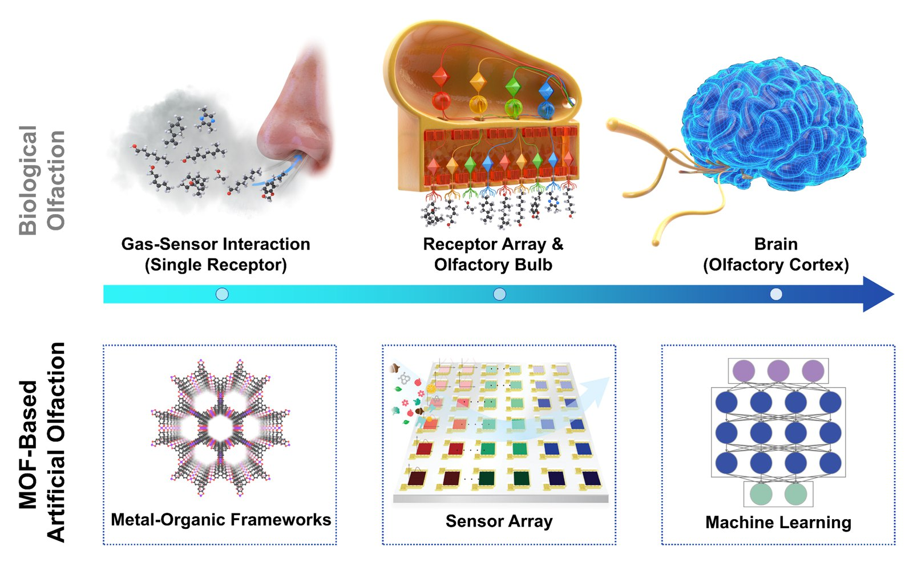

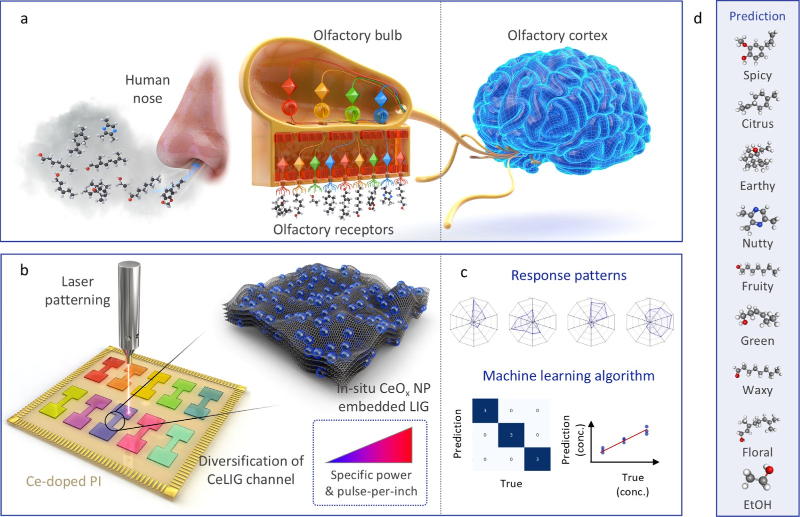
Laser Technology
Using the laser as a materials tool: mask-free, in air, and programmable channel by channel.
The field
Direct laser writing converts a precursor only where the beam lands. Through photothermal and photochemical reactions it can carbonise polymers, oxidise or reduce metals, crystallise and dope semiconductors — without masks, vacuum or high-temperature furnaces. Laser-induced graphene (LIG), formed by scanning a laser over polyimide, is the best-known example: a porous, conductive 3D graphene network written in a single step.
Because the heating and cooling are extremely fast and local, the laser also reaches non-equilibrium structures — finely dispersed nanoparticles, defect-rich carbons, mixed oxidation states — and each pattern can receive its own dose. That makes the laser a natural way to build arrays of different materials on one chip.
My work
- UV pulsed laser → porous LIG scaffolds that host conductive MOFs (Nat. Commun. 2023).
- CO2 laser → LIG with in situ CeOx nanoparticles, where power and pulse density program each channel's chemistry (ACS Nano 2025).
- 532 nm CW laser → laser calcination of MOF films into metal oxide/carbon composites with sub-2 µm patterning (Nano-Micro Lett. 2024).
- Laser oxidation of metal films into multichannel metal-oxide arrays (ACS Sensors 2025, co-author).

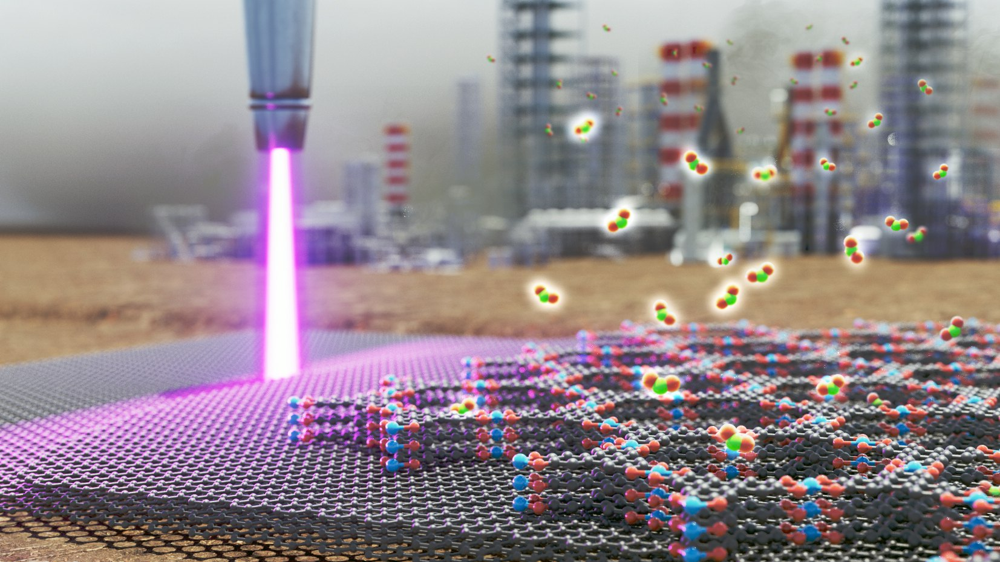

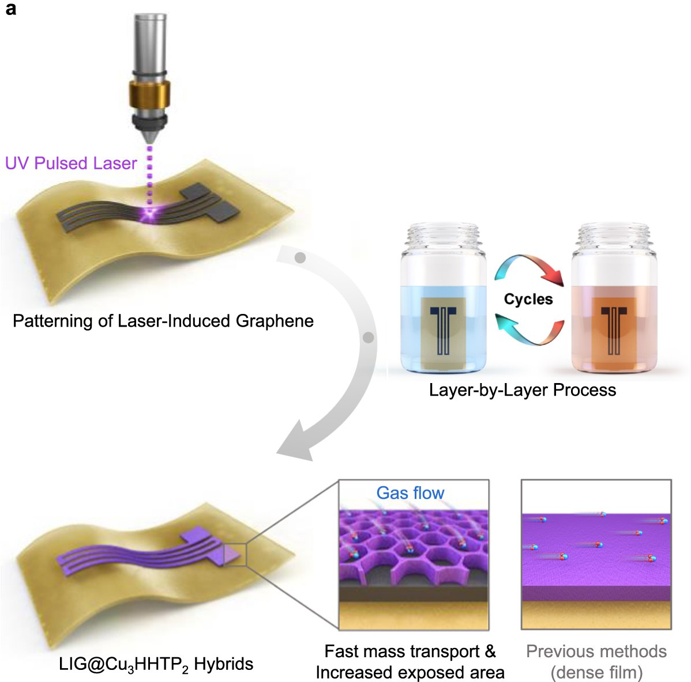

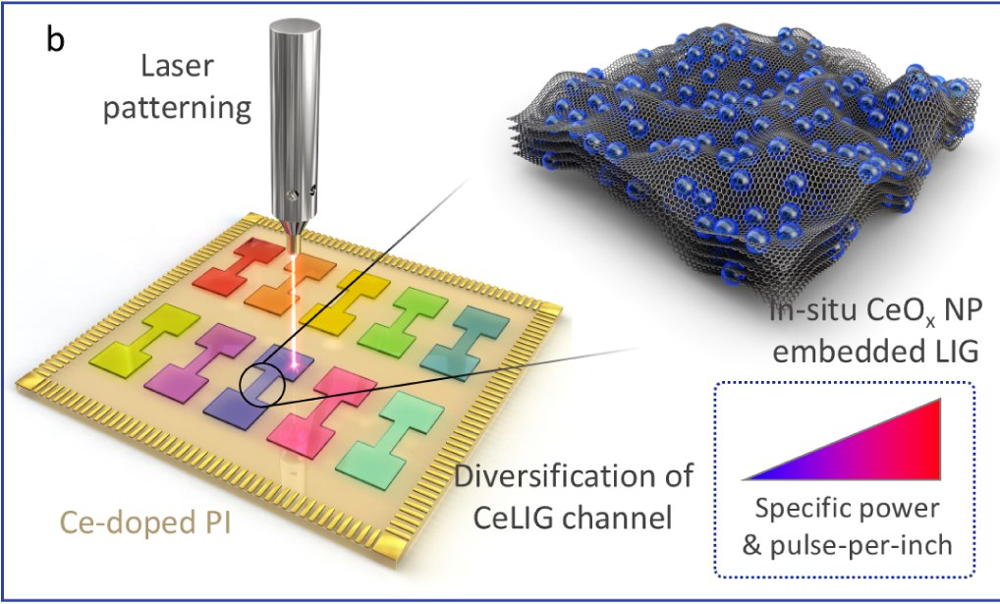

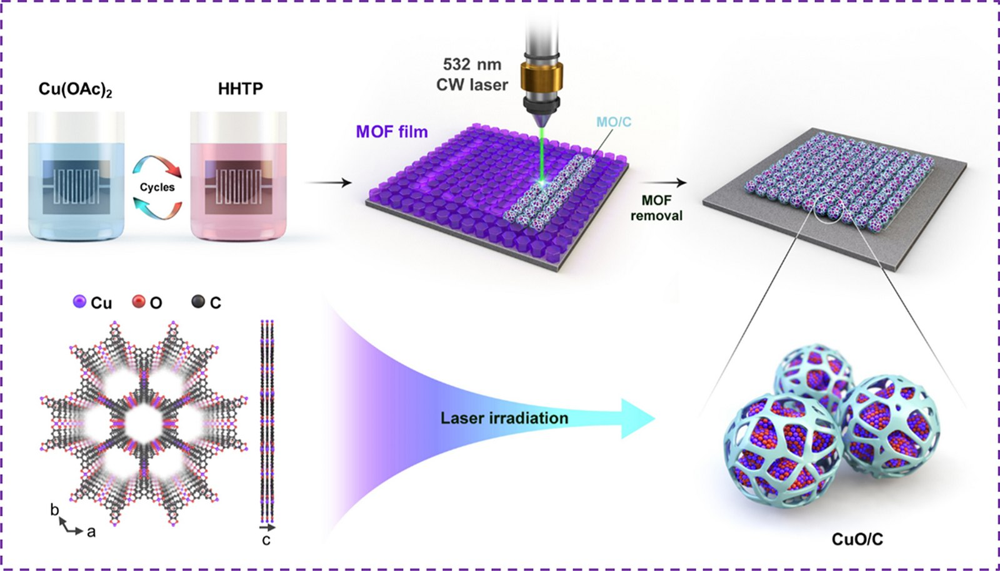
Metal–Organic Frameworks (MOFs)
Porous crystals designed molecule by molecule — and, when conductive, ideal room-temperature sensing layers.
The field
Metal–organic frameworks are crystalline networks of metal nodes joined by organic linkers. They combine record surface areas with pores and chemistry that can be designed almost atom by atom, so gas molecules can be concentrated and recognised at the pore walls.
Most MOFs are electrical insulators, but two-dimensional π-conjugated MOFs such as Cu3(HHTP)2 conduct charge through their stacked layers, turning gas adsorption directly into a resistance change at room temperature. The practical challenges are integrating them as thin films on devices and getting gas in and out quickly — a dense film is slow because molecules must diffuse through it. MOFs are also excellent precursors: heating them leaves metal oxides finely mixed with carbon.
My work
- Lung-inspired hierarchy. Layer-by-layer growth of Cu3(HHTP)2 on porous LIG combines macropores for gas transport with MOF micropores for adsorption: ppb-level NO2 detection at room temperature with 16 s response and 15 s recovery, versus about 90 s / 101 s for a dense MOF film (Nat. Commun. 2023).
- MOF-derived composites by laser. A MOF precursor distributes metal and carbon uniformly, so laser calcination gives homogeneous CuO/C with fast, wide-range ethanol sensing at room temperature (Nano-Micro Lett. 2024).
- Current work extends both routes to multichannel MOF-based electronic noses.

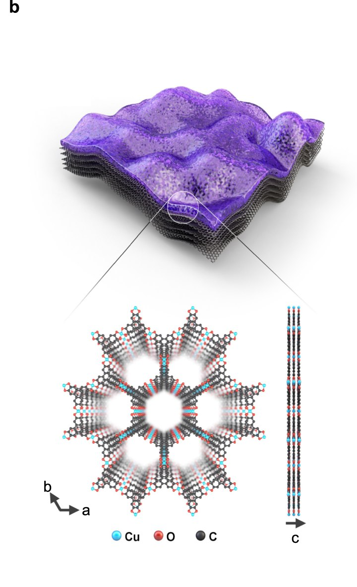

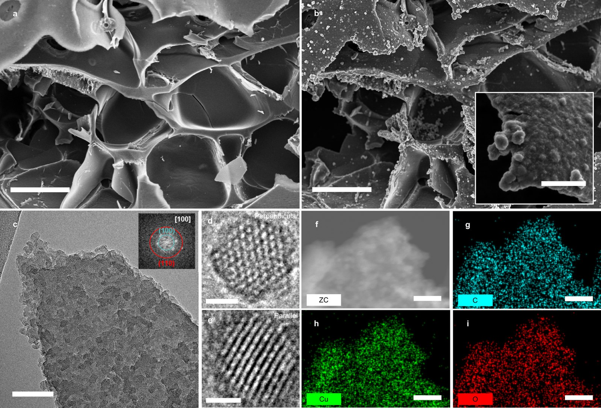

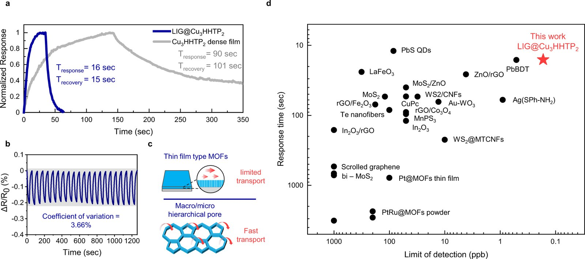

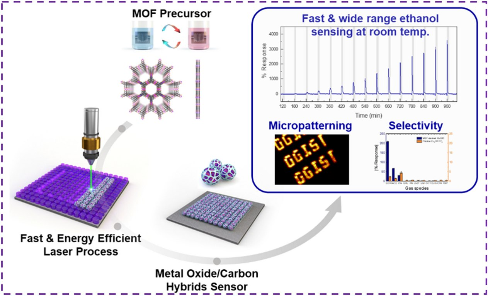
Deep Learning for Sensor Signals
Turning multichannel sensor responses into odor identity, concentration and mixture composition.
The field
A sensor array produces a stream of multichannel time series. Pattern recognition maps these fingerprints to an odor class and, ideally, to concentrations — even for mixtures. Classical pipelines extract steady-state features and use dimensionality reduction (PCA, t-SNE) with classifiers such as SVMs.
Deep learning learns the features directly from the raw signals. Recurrent networks (LSTM) and attention-based models (Transformers) can read the transient part of the response, so a decision does not have to wait for the sensors to saturate — the key to real-time, wearable or in-line olfaction.
My work
- t-SNE + SVM on the ten-channel CeLIG array: 97.5% (training) and 97.1% (test) accuracy for nine odorants, with concentration regression and binary-mixture component prediction (ACS Nano 2025).
- LSTM on a laser-oxidized metal-oxide array: 95.2% for eight odorants, binary mixtures and wine classification (ACS Sensors 2025, co-author).
- Real-time recognition from transient signals with CNN–Transformer models, including mixtures — ongoing work.

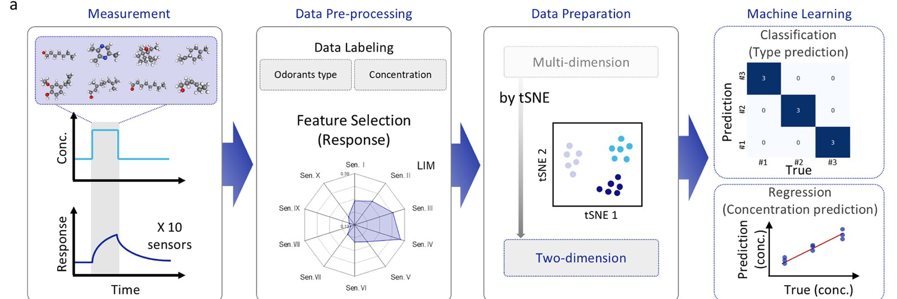

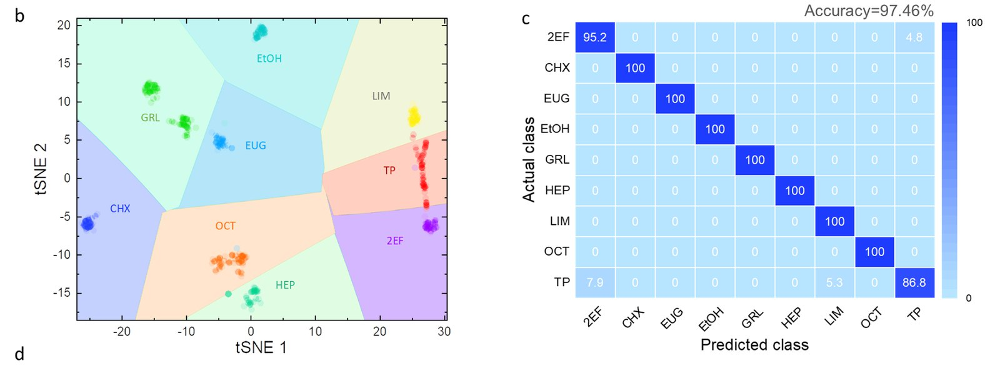